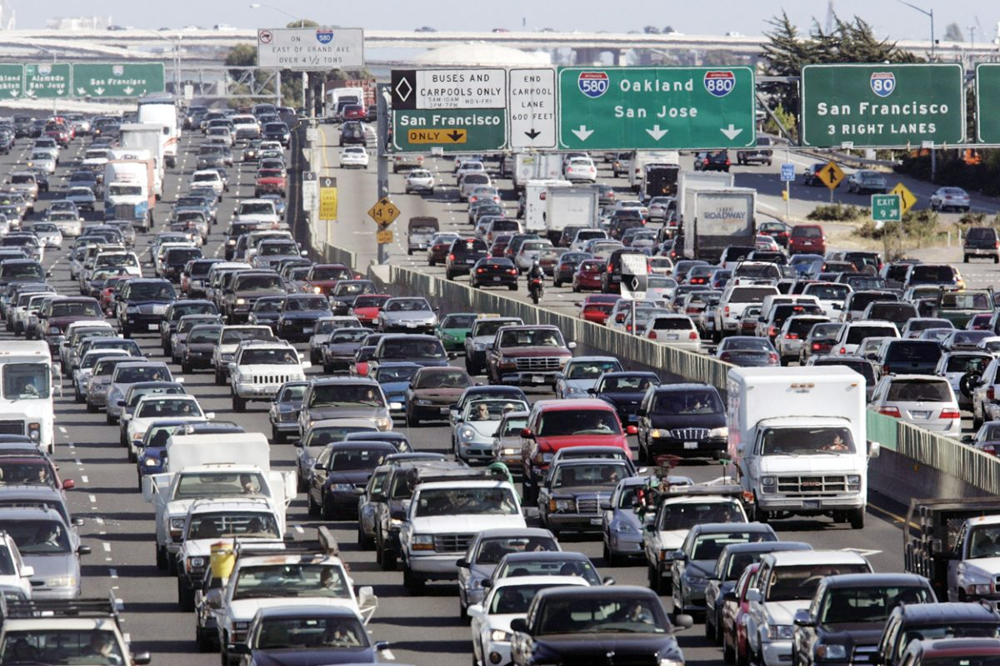

Traffic in the bay area sucks.
Does it have to be this way?
I downloaded a traffic simulator called SUMO (Simulation of Urban Mobility) to find out
The first electric traffic light was built in 1912 in Paris, and since then have been almost ubiquitous in traffic control at intersections (apart from stop lights and roundabouts), but have they been advanced since then?
Turns out, people have been studying traffic over the years in a quite active field of study called traffic theory, they've devised methods to find optimal times for traffic lights given an estimated flow of traffic through that intersection. They then program that into the traffic lights when they install them at the intersection. But what happens when one time setting is faced with different traffic scenarios? Traffic isn't at a constant flow throughout the day. It varies over time. The next logical step in the solution is to load different traffic light patterns scheduled to operate at different times of the day to deal with the different traffic flows that happen throughout the day. But then what happens when there's an accident or some other kind of dynamic change in traffic patterns that doesn't follow your predicted schedule?
To reach a close-to-optimal solution, your lights have to adapt live to changing road patterns. This already partly exists in the case of actuated traffic lights - lights that take in environmental information (such as through sensors in the ground that detect when cars are present) and use that information to adapt to the current scenario. However, these sensors don't give enough information to make really good judgements (typically just a binary - true if a car is present and false if there is no car), and they only gather information to pass on to one connected traffic intersection. I think you know where I'm going with this. In order to devise a better traffic system, you have to give it as much information as possible, and allow it to respond dynamically using this informaiton. Current solutions are getting closer: there now exist streets that can synchronize their lights based on collective information on the number of cars on that street, but these are limited to only the street that they operate and nothing else. The most advanced system that currently seems to exist is called SCATS (Sydney Coordinated Adapted Traffic System). This system is able to share information among multiple traffic lights that is collected by the previously mentioned car sensors at each intersection and coordinate them, providing a stronger traffic optimization than any of the prior solutions. Information still seems limited though, and SCATS was originally built in 1982. There's probably a better way to do this by now.
Let's take a scenario where we have close to perfect information about number of cars on the road, the speed that each is going at, etc, can we beat existing methods?
Here is a video of a traffic light system where all the lights are actuated (left) vs a simple evolutionary algorithm (right) I wrote simulated in the open source traffic simulation software, SUMO. The streets are an actual set of streets next to my house.
The evolutionary algorithm completes all the routes of the cars in the simulation 20% faster with very little tuning of parameters. The main changes between the two scenarios is that the traffic lights are now not limited to the sensors on the road, but rather have information on all cars that are on the streets directly connected to the intersection of the traffic light. This highlights that traffic light optimization is currently more an information problem rather than a problem that requires advances in traffic theory or algorithms.
This was done super quickly, so more work would have to be done on making sure the baseline that the evolutionary algorithm is being compared to is realistic, and while I did test the algorithm on other maps which also showed improvement, it would be good to do a robust experiment and try more advanced algorithms.
Stay tuned for further developments and source code!